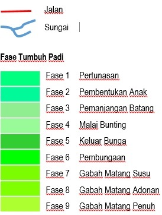

Peta berbasis WEB ini disederhanakan dari Bootleaf Template bmcbride dan SinauGIS. Dengan memanfaatkan perpustakaan Bootstrap 3, Leaflet dan typeahead.js. Sehingga aplikasi ini tidak berbayar sesuai dengan prinsip Open source dan MIT licensed.
| Website | http://geografi.ums.ac.id/ |
| geografi@ums.ac.id | |
| Telepon/SMS/WhatsApp | 0852 8750 8004 |
| Arif Darmawan | |
Segala Bentuk data yang dipublikasikan dalam web ini sifatnya terbuka dan bebas dimanfaatkan kecuali tujuan komersialisasi.
Siapapun bebas mengakses data yang tersedia dan memanfatkanya baik dengan mencantumkan sumber web ini ataupun tidak sejauh dalam tujuan yang bermanfaat bagi kemaslahatan umat dan bangsa.
Hormat Saya (Penulis)
Citra Satelit Landsat 8 L1 EarthExplorer USGS
Batas Lahan Sawah Portal BIS (InaGeoportal)
Batas Adminstrasi Kecamatan Dan Kabupaten Portal BIS (InaGeoportal)
Jalan Raya Portal BIS (InaGeoportal)
Sungai Portal BIS (InaGeoportal)
REL KA Portal BIS (InaGeoportal)
Sampel Fase Tumbuh
